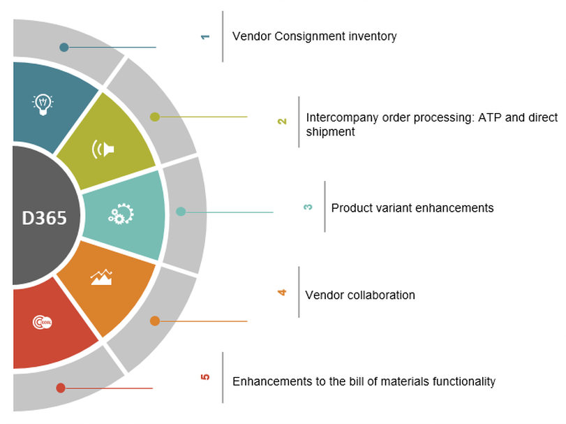

BLOG
 What’s new in Microsoft Dynamics 365 for Operations – Supply Chain
What’s new in Microsoft Dynamics 365 for Operations – Supply Chain
June 1, 2017| Real Dynamics Team
Microsoft Dynamics AX 365 is a new approach to business applications which brings together Dynamics CRM, AX, NAV and Office 365 with a unified application platform and data model.
With additional capabilities coming from Azure, PowerBI, Cortana Intelligence, Azure Machine learning, Microsoft Flow and Microsoft PowerApps, this new form of business critical application is expected to scale new heights and empower businesses to focus and grow like never before.
This first article will cover following enhancements expected in Supply Chain in Microsoft Dynamics AX 365 for Operations.
Vendor Consignment inventory
Consignment inventory is inventory that’s owned by a vendor, but stored at your site. When you’re ready to consume or use the inventory, you take over the ownership of the inventory. Every Dynamics AX customer that has consignment inventory from vendors or with their customers had to come up with workarounds like zero $ inventory and moving it from one warehouse to another in system and many manual steps on PO Invoicing. It was still not perfect. Good news is all of these workarounds will no longer required.

Following capabilities are expected in inbound consignment inventory processes:
- Physically receive vendor-owned inventory on-hand without creating general ledger transactions.
- Start a production process where the vendor-owned inventory can be physically reserved.
- Change the ownership of the raw material in order to be able to process the consumption as part of the production order processing.
- Vendors can monitor consumption of their inventory using the vendor collaboration interface.
- Support for standard cost and moving average costing methods in vendor consignment inventory process.
- Vendors can monitor the consumption of consignment inventory to see when the customer takes ownership of inventory.
- The On-hand consignment inventory page shows the vendor the actual stock level of the inventory that the customer has not yet taken ownership of.
- The Purchase orders consuming consignment inventory page shows a list of the purchase orders that were generated when a transfer of ownership took place.
Inter-company Order Processing: ATP and direct shipment
Order promising person not only calculates the optimal delivery dates within the same selling company, going forward they would be able to evaluate product availability throughout the intercompany trading chain, as well as looks at delivery options directly from the vendor to the customer.
The decisions about where demand is sourced from, and whether direct delivery is used, can now be recorded directly at the sales order line level. When a sales order is created, the availability check runs in the sourced company from the intercompany chain. Possible delivery dates are calculated using the delivery date control that can be configured individually for each sourcing company, like ATP or capable to promise (CTP).
Delivery alternatives has a new functionality to help determine the best sourcing strategy and to help select the best options or trade-offs for meeting customer expectations for delivery dates. The options that are considered include: different sourcing options, different warehouses, possible procurement, different delivery methods, and the option to allow partial delivery.
The ATP calculations are accessible directly from the sales order lines, which improves the usability for working with sales orders that source products through other orders.
Product Variant Enhancements
Microsoft is taking product variants to the next level by adding a product variant number nomenclature and by extending default order settings for product variants.
- By assigning a product variant nomenclature template to product masters, the product ID’s and names generated for product variants follow a specific structure. This makes it easier for you to identify and search for a product variant during order entry.
- The default order settings have been extended to allow configuration of specific default order settings per variant or per specific product dimension.
- The extension is leveraged in all processes in:
- Sales
- Procurement
- Production
- Lean production and replenishment
- Project management
Vendor Collaboration
Inviting vendors to collaborate directly in Dynamics 365 for Operations improves the vendor’s visibility of purchase orders and ensures a shared view on responses to purchase orders thereby greatly improving the communication between the organization and vendor.
- This collaboration functionality has been expanded so that external vendors can now respond to individual purchase order lines and suggest changes, such as new dates, quantities, split a line in new delivery dates, or substitute an item with a new item.
- The Purchase order confirmation workspace allows vendors to see which POs they need to respond to, which POs are awaiting confirmation by the customer, and which POs have been confirmed but not yet processed with product receipt.
- Vendors can now suggest changes on lines and exchange documents.
- Customers can share notes and documents that are related to purchase orders with vendors, for example, to describe requirements. The vendor can also share notes and attachments with the customer when they respond to the PO. When a vendor responds to a PO, there are different messages that are shown when they Accept, Reject, or Accept with changes. These messages can be customized to better support the business processes of the buying company.
- A new external vendor administrator security role enables vendors to add new contacts and update information about contacts and to request new vendor collaboration users. Users with that role can also request that specific vendor user accounts are inactivated, or that security roles are modified. The same functionality is available for users at the customer company.
Enhancements to the bill of materials functionality
The enhancements in bill of materials functionality, includes:
- Support for BOMs that include items with different product dimensions on the same item.
- Production orders with circular structures at the first level of their BOMs are excluded from BOM level calculation for material resource planning.
- The ability to calculate separate BOM levels for material resource planning and cost calculation.
Recent post
-
How-to: Bring your own data warehouse to Microsoft Dynamics 365 for Operations
September 1, 2017| Real Dynamics Team
-
What’s new in Microsoft Dynamics 365 for Operations, Part 2: Warehousing and mobile
August 1, 2017| Real Dynamics Team
-
What’s new in Project accounting and management in Microsoft Dynamics 365 for Operations
July 1, 2017| Real Dynamics Team
-
What's new in Microsoft Dynamics 365 for Operations - Financials, Part 3
May 1, 2017|Real Dynamics Team
-
What's new in Microsoft Dynamics 365 for Operations - Financials, Part 2
April 1, 2017| Real Dynamics Team
-
Microsoft Dynamics AX Company Split
March 3, 2017| Real Dynamics Team
-
What's new in Dynamics 365 for Operations (AX7) - Financials, Part 1
February 1, 2017| Real Dynamics Team
-
Budgeting Capabilities in New Microsoft Dynamics AX (Dynamics 365)
January 1, 2017| Real Dynamics Team